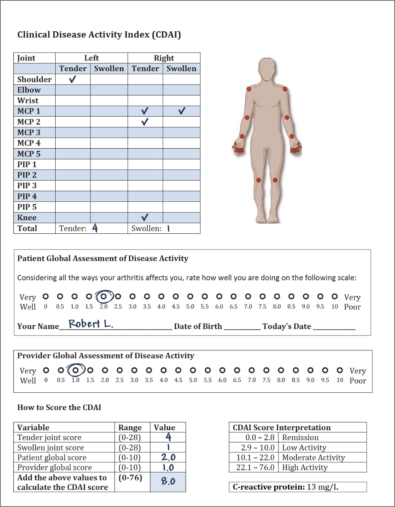

56-year-old male with RA and history of malignancy
Robert is a 56-year-old male who works as a farmer. He is 178 centimetres tall and weighs 90 kilograms, giving him a BMI of 28.4 kg/m2. Robert’s job is strenuous and involves a lot of standing, walking, and working with heavy machinery. His diet primarily consists of red meat. He has had past resection of precancerous skin lesions. He had colon cancer three years ago which was fully resected (Dukes A). He is also taking an antidepressant. Robert is a heavy smoker, and has his cancer screenings up to date. He typically has three to four beers per day, and his BP is 140/90 mmHg. Robert’s father had lung cancer. Recently, Robert’s doctor spotted a nodule (0.8 cm) on a CXR. High-resolution computer tomography could not rule out malignancy. A bronchoscopy and PET scan are pending. Robert has had RA for two years and is being treated with leflunomide after failure of MTX.

56-year-old male with RA and history of malignancy
“I recently had a follow-up with my rheumatologist. She counted my tender and swollen joints and asked me how my arthritis affects me on a scale of 0 to 10, and we completed a few other forms and tests.”
Her assessment was as follows:
Robert’s CDAI is 8, indicating low disease activity. His CRP is elevated.
56-year-old male with RA and history of malignancy
I had an X-ray, and doctors noticed a nodule on my lung. So, I had to get a high-resolution scan, and my doctor said it was impossible to rule out malignancy. I had to repeat the CT after 6 months, and the nodule grew so a PET scan was performed. The PET scan results were equivocal. I am booked for a bronchoscopy.
Usually, all DMARDs (cs, ts and bDMARDs) are held during chemotherapy, unless the patient receives a checkpoint inhibitor and has an RA flare. Rheumatologists can use csDMARDs and bDMARDs if the patient is not receiving major immunosuppressive chemotherapy treatment. Immunosuppressant drugs can increase the risk of infection in patients receiving chemotherapy and may contribute to cytopenias and tranaminiitis.
Is it safe to use bDMARDs and/or tsDMARDs in patients with or at high risk of malignancy? How should these treatment decisions be made?
Click to see Dr. Miller’s answer.
What is the optimal treatment for patients with RA who have had cancer and undergone chemotherapy?
Considering Robert’s personal history of atypia, is it safe to prescribe bDMARDs and/or tsDMARDs?
Yes
Studies evaluating patients with RA who previously had cancer are limited. However, rituximab, abatacept and likely TNFi appear to be safe in patients with past cancers.4,5,6 Patients with RA with prior malignancy who receive rituximab were not shown to have an increased risk of future malignancy,5 and patients prescribed tumour necrosis factor (TNF) inhibitors after cancer have been shown to have similar risks of new or recurrent cancer as those who are not taking these drugs.3 Patients who take immunosuppressive corticosteroids such as prednisone have been shown to be at an increased risk of developing certain cancers, such as non-melanoma skin cancer. Tofacitinib was associated with more malignancies than TNFi in older patients with cardiovascular risk factors, especially smokers.7
Patients with RA have an increased risk of lung cancer. Smoking is the most likely factor contributing to an increased risk of lung cancer, and smokers also tend to have increased RA disease activity.8 Chronic inflammation may also be associated with this increased risk.
Patients with RA are at an increased risk of non-melanoma skin cancer. MTX and other advanced therapies seem to slightly increase the risk of skin cancer.3 Patients should be screened for skin cancer by a history of unhealing sores on skin and a visual look at the skin especially in sun exposed areas and should avoid sun burns and use sunscreen and should be advised to report any skin irregularities to their general practitioner.
How can rheumatologists and oncologists best communicate their plans and thoughts to each other regarding the care of a patient with RA with or at risk of malignancy? What details should these communications include?
Click to see Dr. Pope’s answer.

Click to see Dr. Miller’s answer.

What type of RA treatment is safe for patients currently undergoing chemotherapy and experiencing RA flares, not taking immunosuppressive chemotherapy?
TNFi and tocilizumab use was associated with ___________ in some studies.
Which of the following medication(s) have been shown to be safe for use in patients with history of malignancy?
The most likely factor contributing to lung cancer risk in RA patients is smoking.
MTX and other advanced therapies have been shown to slightly increase the risk of skin cancer.
All patients with RA should be screened for skin cancer.
1. De Cock D, Hyrich K. Malignancy and rheumatoid arthritis: Epidemiology, risk factors and management. Best Practice & Research Clinical Rheumatology 2018; 32(6):869-86.
2. Montastruc F, Renoux C, Dell’Aniello S, et al. Abatacept initiation in rheumatoid arthritis and the risk of cancer: a population-based comparative cohort study. Rheumatology (Oxford) 2019; 58(4):683-91.
3. Wadström H, Frisell T, Askling J. Anti-Rheumatic Therapy in Sweden (ARTIS) Study Group. Malignant Neoplasms in Patients With Rheumatoid Arthritis Treated With Tumor Necrosis Factor Inhibitors, Tocilizumab, Abatacept, or Rituximab in Clinical Practice: A Nationwide Cohort Study From Sweden. JAMA Intern Med 2017; 177(11):1605-12.
4. Aaltonen KJ, Joensuu JT, Virkki L, et al. Rates of serious infections and malignancies among patients with rheumatoid arthritis receiving either tumor necrosis factor inhibitor or rituximab therapy. J Rheumatol 2015; 42(3):372-8.
5. Silva-Fernández L, Lunt M, Kearsley-Fleet L, et al. British Society for Rheumatology Biologics Register (BSRBR) Control Centre Consortium. The incidence of cancer in patients with rheumatoid arthritis and a prior malignancy who receive TNF inhibitors or rituximab: results from the British Society for Rheumatology Biologics Register-Rheumatoid Arthritis. Rheumatology (Oxford) 2016; 55(11):2033-9.
6. Xie W, Xiao S, Huang Y, et al. A meta-analysis of biologic therapies on risk of new or recurrent cancer in patients with rheumatoid arthritis and a prior malignancy. Rheumatology 2020; 59:930-9.
7. Ytterberg SR, Bhatt DL, Mikuls TR, et al. Cardiovascular and Cancer Risk with Tofacitinib in Rheumatoid Arthritis. N Engl J Med 2022; 386:316-26.
8. Manfredsdottir VF, Vikingsdottir T, Jonsson T, et al. The effects of tobacco smoking and rheumatoid factor seropositivity on disease activity and joint damage in early rheumatoid arthritis. Rheumatology (Oxford) 2006; 45(6):734-40.